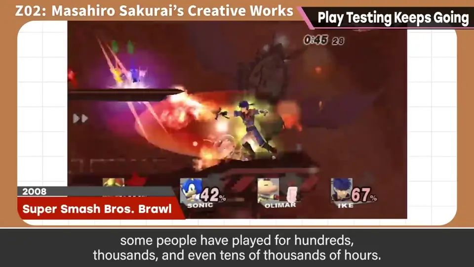
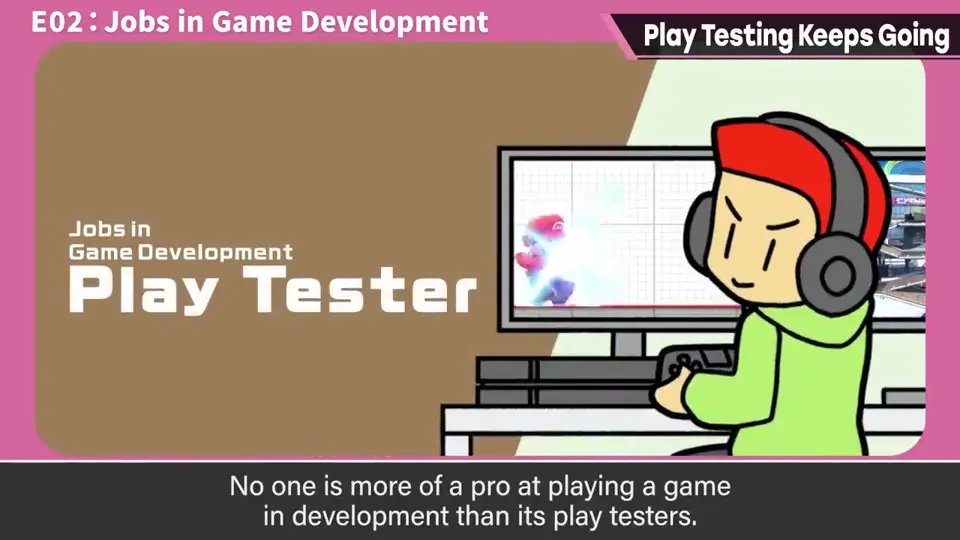
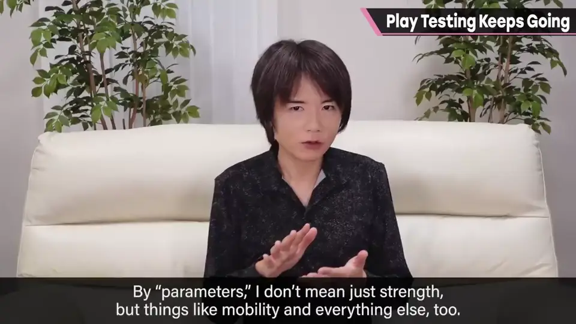
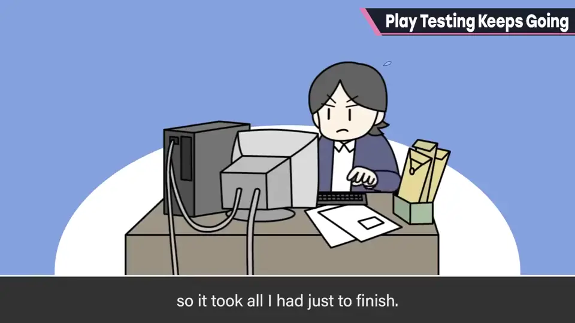
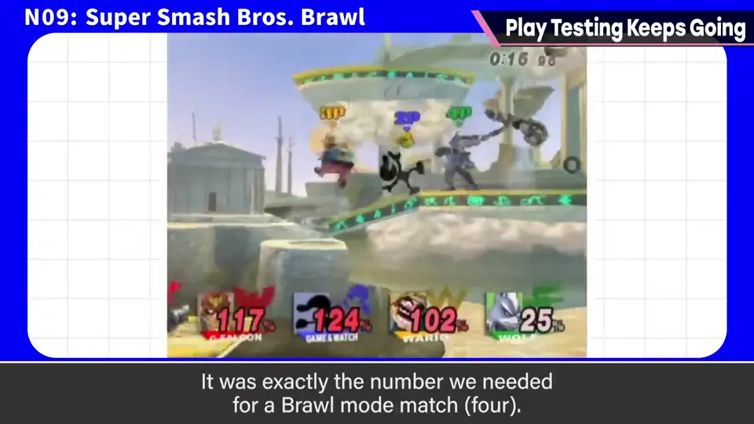
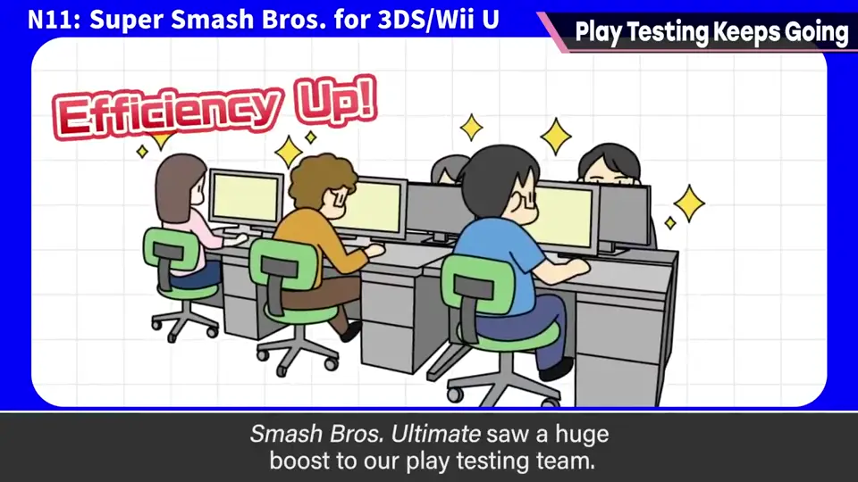
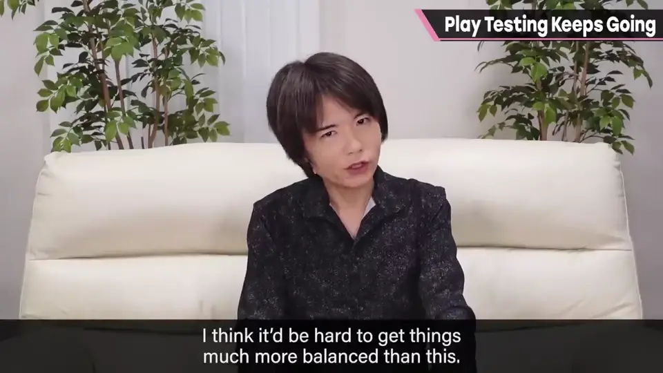
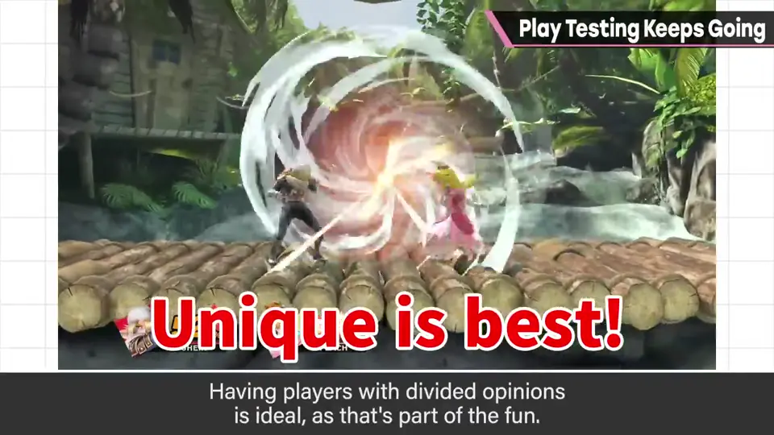
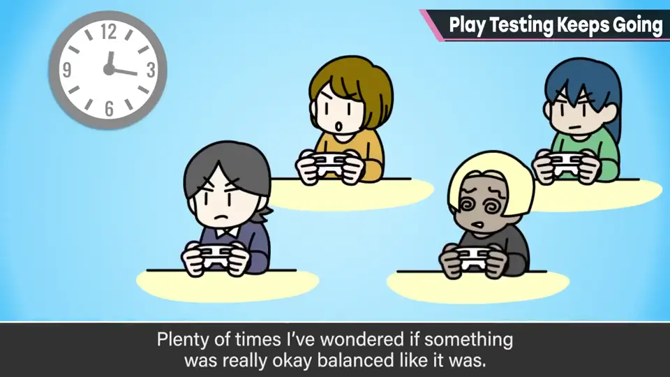
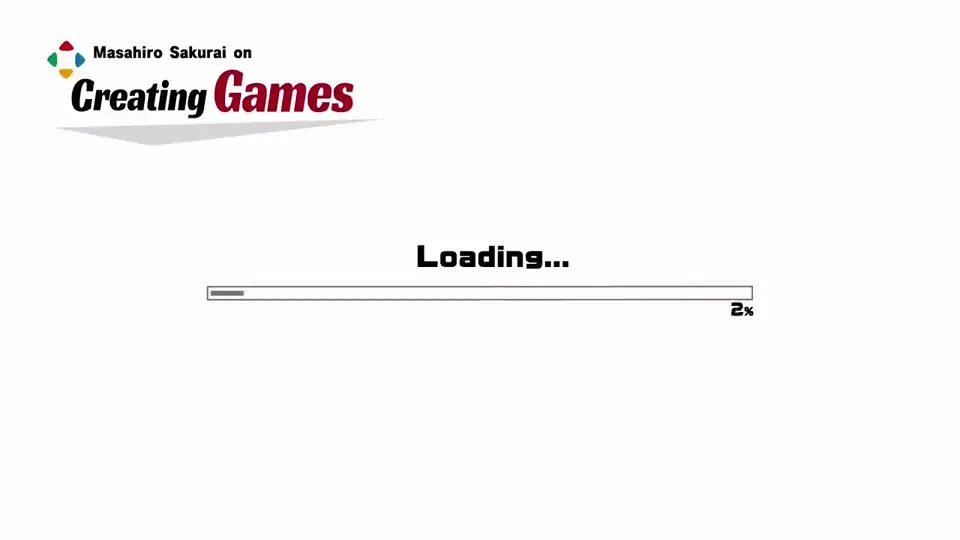

速览
樱井做游戏，但自己作品的游玩时间完全比不上玩家——他做的带对战要素的作品，有人玩了几百、几千甚至几万小时，非常感谢；高兴，但也请玩玩其他游戏。这次讲监测（monitoring）：在游玩方面，有比开发者更专业的「监测组」，总之持续对战，汇总他们的意见来平衡斗士。《大乱斗》到 DX 为止，参数都是樱井独断调整的——不只攻击，包括移动性能等一切；和员工先玩，判断强弱、个性有无，自己调整；开发时间短，还要做一般的总监工作，再加上设参数，光做出来就竭尽全力，现在回想也觉得「亏那时做得出来」。准确地说直到《卡比的空气骑乘》都是那种体制。从《大乱斗X》开始加入测试游玩的人员，但只有约 4 人，也不是在大赛中赢很多的人，大家一起乱斗就结束了，熟练度谈不上高；到 X 为止也不能在线更新，发售后就保持发售日的平衡，连调研数据都无法引入。经过新光神话和大乱斗4，从《大乱斗 SP》起，监测组大幅强化：人数多，也聚集了实力强的人才；加上线上对战、大赛等盛行，其结果也容易参考，平衡方面再往上很难了。他的调整方针是个性丰富为好：意见分歧是常态，那正是乐趣；只看某处也许觉得狡猾，但那是在「个性」可接受的范围内。大赛上位者使用的斗士分散是好事，但他不只看那里——也有为乱斗调整的斗士；开发中他午休会用 30 分钟乱斗规则测试，其中也有很多让他觉得「这个平衡真的好吗」的东西。但监测组比他精度高得多，每天面对对战，所以他相信其分析结果；他插嘴，多半是在个性快被扼杀的时候。
1. 玩家玩得比我多 0:03
樱井做游戏，但他玩自己作品的时间完全比不上玩家。他做的带对战要素的作品，有人玩了几百、几千乃至几万小时，非常感谢——高兴，但也请去玩玩别的游戏。

2. 监测组 0:30
这次讲「监测」。在游玩方面，有比开发者更专业的监测组，总之一直对战。汇总他们的意见，来取得斗士之间的平衡。

3. DX 以前：樱井独断调整 0:48
《大乱斗》到 DX 为止，参数都是樱井独断调整的。所谓参数不只是攻击，也包括移动性能等一切：和员工先玩一玩，判断强弱、有无个性，然后自己调整。


开发时间也短，在做普通总监工作的同时还要设参数，光是做出来就竭尽全力。现在回想，也觉得「亏那时做得出来」。准确地说，直到《卡比的空气骑乘》都是那样的体制。
4. X：只有约 4 名测试者 1:25
从《大乱斗X》开始加入了测试游玩的人，但只有大约 4 人，也不是在大赛中赢过很多的人。大家一起乱斗一下就结束了，熟练度也谈不上高。

而且到 X 为止都不能在线更新，发售后就保持发售日的平衡，连调研数据都无法引入。
5. SP：监测组大幅强化 1:54
经过《新·光神话》和《大乱斗4》，从《大乱斗 SP》开始，监测组大幅强化：人数多，也聚集了实力强的人才。


再加上线上对战、大赛等很盛行，其结果也更容易参考。在平衡方面，再往上已经很难了。
6. 方针：个性为先 2:20
樱井自己的调整方针是个性丰富为好：意见分歧才是常态，那正是乐趣所在。只看某一处也许会觉得狡猾，但他认为那在「个性」可接受的范围内。


大赛上位者使用的斗士很分散，这是好事，但他不只看那里——当然也有为乱斗调整的斗士。开发中他午休时会用 30 分钟乱斗规则测试，其中也有不少让他觉得「这个平衡真的好吗」的地方。

自测题
1. 《大乱斗》到 DX 为止参数由谁调整？
樱井独断调整全部参数（攻击、移动性能等）。 0:48
2. 《大乱斗 SP》在平衡调整上有何进步？
监测组人数和实力大幅提升，并能参考线上对战与大赛数据。 1:54
3. 樱井什么时候会对监测组的调整插嘴？
多半是在个性快要被扼杀的时候。 3:16